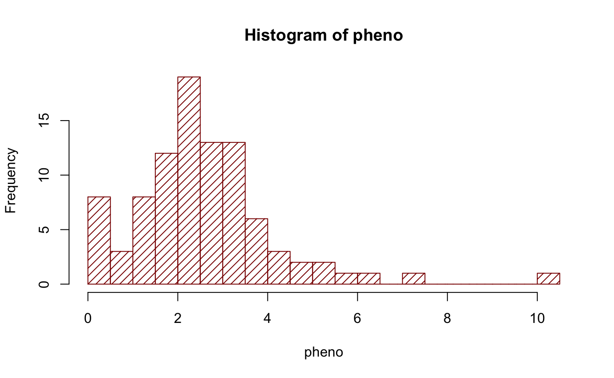
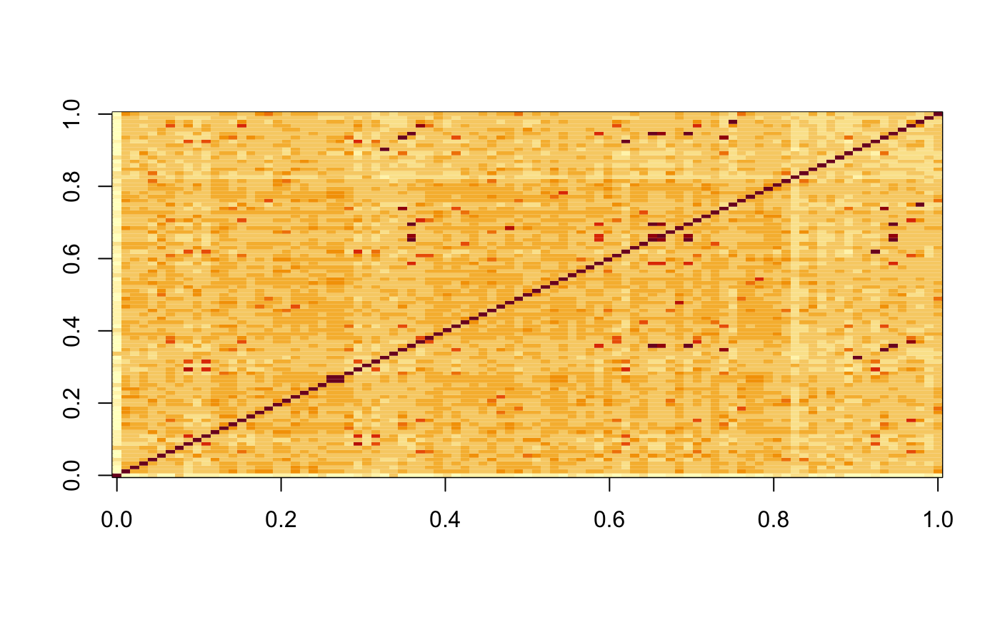

To use the vGWAS package, of course, an R environment is required. Visit:
and install R for the operating system.
Start R and in the R console, type the following command to install the package dependencies first:
#install.packages("devtools")
#install.packages("knitr")
#install.packages("dglm")
#install.packages("doParallel")
#install.packages("foreach")
#install.packages("genio")
#install.packages("hglm")
#install.packages("Matrix")
#install.packages("onewaytests")
#library(devtools)
#devtools::install_github("kullrich/vGWAS", build_vignettes = TRUE, dependencies = FALSE)Now the package is installed in the R library.
Load the library in the R console, and open this vignette with the command:
Nine main functions in the package are ready to use:
Run the following commands to load the example data:
pheno is a numeric vector of the simulated phenotypic values. By running:
hist(pheno, breaks = 30, density = 15, col = "darkred")
The command:
table(chr)
#> chr
#> 1 2 3 4 5
#> 5000 3000 4000 2000 6000shows exactly the number of markers on each of the five simulated chromosomes.
To pre-filter the geno.matrix data for
minor-allele-frequency, use the getMAF function as
follows:
data(geno)
dim(geno)
#> [1] 93 20000
maf <- getMAF(geno.matrix = geno, geno.snp = "col")
geno.maf <- geno[, maf > 0.05]
dim(geno.maf)
#> [1] 93 19075
chr.maf <- chr[maf > 0.05]
map.maf <- map[maf > 0.05]Now, the objects loaded in R are ready for a vGWA scan, which can be done using the single command:
vgwa <- vGWAS(
phenotype = pheno,
geno.matrix = geno,
marker.map = map,
chr.index = chr,
pB = FALSE)A progress bar will indicate the progress of the scan if pB is set to TRUE.
The same can be run using multiple cores.
Note: using the vGWASparallel function
one need to specify, if the SNPs in the geno.matrix are at
columns (geno.snp = "col") or at rows
(geno.snp = "row")
#vgwa <- vGWASparallel(
# phenotype = pheno,
# geno.matrix = geno,
# geno.snp = "col",
# marker.map = map,
# chr.index = chr,
# pB = FALSE,
# ncores = 2)When the scan is finished, all the output statistics will be returned as a list into the object vgwa, which belongs to the class ‘vGWAS’. Any object that has a structure belonging to class ‘vGWAS’ can be directly passed into S3 method function plot. For instance, simply run the following command, we can plot the results in vgwa:
plot(vgwa)
#> nominal significance threshold with Bonferroni correction for 20000 tests are calculated.
which produces Figure 2. There is a clear peak above the Bonferroni corrected threshold (dashed orange line).
Regarding the marker that gave the highest score, the heritability explained by the mean and variance can be split and calculated via:
# get marker with lowest p.value
marker.lowest <- vgwa$p.value == min(vgwa$p.value)
vGWAS.variance(
phenotype = pheno,
marker.genotype = geno[, marker.lowest])
#> variance explained by the mean part of model:
#> 4.2 %
#> variance explained by the variance part of model:
#> 23.06 %
#> variance explained in total:
#> 27.26 %
#> $vm
#> C
#> 0.1026317
#>
#> $vv
#> C
#> 0.5628937
#>
#> $ve
#> C
#> 1.77584
#>
#> $vp
#> C
#> 2.441366The output can also be stored if assigning the function call to an object.
The package source and further development information are on the R-Forge project page: https://r-forge.r-project.org/projects/vgwas/
A reimplementation of vGWAS introducing the parallel
function vGWASparallel as a devtool package can be found
here: https://github.com/kullrich/vGWAS
Max Planck Institute For Evolutionary Biology, ullrich@evolbio.mpg.de↩︎